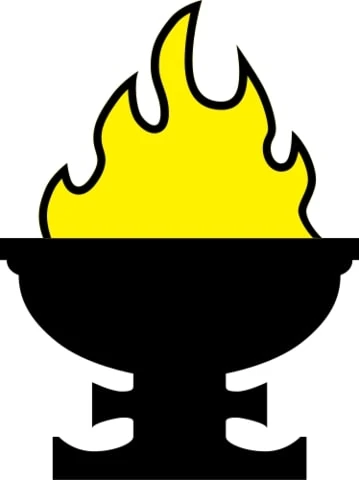

Alicia Dominica
| Saint Alicia Dominica | |
|---|---|
| Founder of the Adepta Sororitas | |
 The Ebon Chalice, symbol of the Order she founded Artwork © Games Workshop | |
| Leader of the Daughters of the Emperor | |
| Tenure | Before c. 288.M36 |
| First Canoness of the Order of the Ebon Chalice | |
| Tenure | c. 288.M36 – 650.M36 |
| Successor | Unrecorded |
| Born | Late M35 (estimated), San Leor |
| Died | 650.M36, Frideswide's World (in battle) |
| Canonised | Soon after 650.M36 |
| Allegiance | Imperial Cult; Adeptus Ministorum |
| Titles | Patron Saint of the Sisterhood; Bearer of the Grail of Ages |
| Known for | Beheading Goge Vandire (c. 288.M36); founding the Orders Militant |
Alicia Dominica, venerated as Saint Dominica, the Patron Saint of the Sisterhood and the Bearer of the Grail of Ages, was the leader of the Daughters of the Emperor and the founder of the Adepta Sororitas. In the last days of the Reign of Blood she beheaded the High Lord Goge Vandire, ending his tyranny in about 288.M36. She then founded the Orders Militant of the Sisterhood on the instructions of the new Ecclesiarch, Sebastian Thor, and became the first Canoness of the Order of the Ebon Chalice. She died in battle on Frideswide's World in 650.M36 and was canonised soon after.[1][2]
Daughters of the Emperor
[edit]Dominica led the Daughters of the Emperor, a convent of warrior-women on the agri-world San Leor who trained in arms as an act of devotion. In the Age of Apostasy, Goge Vandire, who had made himself both Master of the Administratum and Ecclesiarch, visited the convent. He told Dominica to shoot him; the shot was turned aside by a hidden conversion field, and Vandire claimed the Emperor's protection. The Daughters swore themselves to him. He took them to Terra as his bodyguard and renamed them the Brides of the Emperor.[1][3]
For some seventy years the Brides served Vandire as guards, servants and executioners. When the Holy Synod tried to have him killed, the Brides locked themselves in its chamber with the cardinals and came out an hour later carrying their heads.[3]
The end of the Reign of Blood
[edit]When the Confederation of Light of Sebastian Thor, the Adeptus Astartes and the Adeptus Mechanicus laid siege to the Ecclesiarchal Palace, a Custodian Centurion of the Companions came to the Brides under truce. For an hour he pleaded with them to give up their oaths. When they refused, he left his men as hostages and led Dominica and five of her sisters, Arabella, Katherine, Lucia, Mina and Silvana, through the Imperial Palace into the Sanctum Imperialis, before the Emperor on the Golden Throne.[1][3]
What passed there is not recorded. The six women returned in silent fury, went straight to Vandire's audience chamber and renounced him. Dominica's words of judgement, in which she accused him of profaning the Emperor's name, are engraved on the black marble of her sarcophagus. She drew her power sword and beheaded him with one stroke. The Brides took back the name of the Daughters of the Emperor.[1][a]
Founder of the Sisterhood
[edit]Thor's Decree Passive of 288.M36 forbade the Ecclesiarchy to keep "men under arms", and the Frateris Templar, its armies, were disbanded. The Daughters of the Emperor, being women, fell outside the letter of the decree. On Thor's instruction Dominica formally established the Orders Militant of the Adepta Sororitas, divided between the Convent Prioris on Terra and the Convent Sanctorum on Ophelia VII. The Orders became the Chamber Militant of the Ordo Hereticus. Dominica took command of her own Order, the Order of the Ebon Chalice, and her sister Mina founded the Order of the Bloody Rose.[1][2]
The symbol of Dominica's Order is the Ebon Chalice, a flaming black cup. It is said to stand for the terrible knowledge that was given to her before the Golden Throne. Few even in the Sisterhood are taught what it means.[1]
Death and canonisation
[edit]Dominica led her Sisters on many crusades and guided the Sisterhood through its early centuries. She fell in 650.M36 at the battle of Frideswide's World, where she is said to have survived hundreds of blows before a single lasgun shot from a traitor found a weak point in her armour and pierced her heart. She was canonised by the Ecclesiarchy soon afterwards. Her sarcophagus lies on Terra, and her relics are among the most venerated in the Imperium.[1][2][b]
Legacy
[edit]Dominica is the patron saint of the whole Adepta Sororitas, and the Order of the Ebon Chalice, as the first of the Orders Militant, holds a place of honour among them. Every Battle Sister swears her vows in the tradition Dominica established. In the Era Indomitus, the Orders Militant fight on every front of the Indomitus Crusade, and the Ebon Chalice is among the Orders that serve on Terra itself.[1][4]
Timeline
[edit]| Date | Event |
|---|---|
| Late M35 (estimated) | Born; joins the Daughters of the Emperor on San Leor |
| Early M36 | Vandire makes the Daughters his Brides of the Emperor |
| c. 288.M36 | Brought before the Golden Throne; beheads Vandire |
| 288.M36 | Decree Passive; founds the Orders Militant and the Order of the Ebon Chalice |
| 650.M36 | Killed at Frideswide's World; canonised soon after |
See also
[edit]Notes
[edit]- ^ The Administratum register places the end of the Reign of Blood immediately before the Decree Passive of 288.M36. See Reign of Blood for other datings.
- ^ The span of more than three centuries between the end of the Reign of Blood and her death is recorded by the Sororitas. Some Ministorum histories place her death much closer to the Reformation; the Sisterhood's date is given here.
References
[edit]- ^ a b c d e f g h Thorpe, Gav. Our Martyred Lady (Audio Drama). Black Library, Part 1: Troublesome Priests.
- ^ a b c Codex: Witch Hunter (3rd Edition), pp. 4, 6. Games Workshop.
- ^ a b c Codex: Sisters of Battle (2nd Edition), pp. 13-14, 16, 18, 35. Games Workshop.
- ^ White Dwarf Magazine 293 (UK), "Liber Sororitas - The Matriarchs of the Sisterhood," by Andy Hoare, pg. 56.